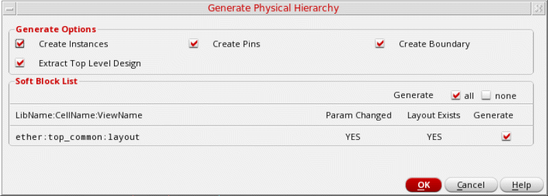

Generating a Physical Hierarchy
The Generate Physical Hierarchy command allows you to generate the components in the design while maintaining the hierarchy levels defined in the CPH Soft Block mode. By default, Generate Physical Hierarchy looks for layout views and is guided by the configuration you specify in the Logical Switch View List and Physical Stop View List fields in the Global Bindings section of the CPH interface.
You can also specify the attributes, such as boundary, IO pins, and obstructions, for each soft block and soft abstract in the Attributes section of the Soft Block mode. While defining soft blocks in the CPH form, the pin layer will be read from the intIOPinLayer environment variable, which corresponds to the I/O Pins tab. Following is the syntax to set the environment variable.
envSetVal("Layout XL", "initIOPinLayer", "string", "METAL3 pin")
To generate the physical hierarchy:
-
Choose Floorplan – Generate Physical Hierarchy. The Generate Physical Hierarchy form is displayed.
 - (Virtuoso Layout Suite EXL) In the Generate Options section, select the objects to be generated when the physical hierarchy is generated. All options are selected by default. The available options are Create Instances, Create Pins, and Create Boundary. Clear the check boxes for the objects that you do not want to generate.
-
Select Extract top level design checkbox to selectively enable the connectivity extraction for top block only and control the extraction for the remaining of the soft block through the environment variable. In this state, the value from the
extractAfterGenerateAllenvironment variable is honored while opening the GPH form. - In the Soft Block List section, use the Generate option to specify the scope of the command. Select all to generate all soft blocks or none to generate none of the soft blocks configured.
-
Review the Soft Block List. The tool reads all the soft attributes and checks for the existence of cellviews defined in Configure Physical Hierarchy. The following information is displayed in the Soft Block List section:
The pin purpose is read from theinitIOPinLayerenvironment variable. Pins are created on this purpose while generating the physical hierarchy. - Select the Generate check box for all the cellviews you want to generate in the layout canvas.
- Click OK to generate the physical hierarchy in the layout window.
A summary report of the soft blocks generated by Generate Physical Hierarchy is displayed in the CIW. The summary report displays a table that lists the source lib:cell:view name, the target lib:cell:view name, the instance name, and the status of whether the soft block has been generated.
The Generate Physical Hierarchy command generates and resizes the PR Boundary along with its child objects.
After running Generate Physical Hierarchy, the connectivity extractor is not run automatically. To get the opens and shorts marks, run the extractor by choosing Connectivity – Update – Extract – Layout.
After generating the physical hierarchy, for a few soft blocks, a few extra pins may be generated in the layout view. Usually, these are power and ground pins that were not visible in the logical hierarchy of the design. Generate Physical Hierarchy promotes these pins to the top of each soft block while generating their layout views. Use the options in the Edit – Soft Blocks form to update the parameters for these pins.
If there are incremental updates in the schematic, use the Connectivity – Update – Components and Nets command to update the connectivity.
Consider a top-level design layout that contains soft blocks and has been generated by using Configure Physical Hierarchy and Generate Physical Hierarchy and subsequently you have added a block in the schematic.
To generate the layout for the new block, you can use Configure Physical Hierarchy to define the soft block parameters in the schematic and then use Generate Physical Hierarchy to generate the corresponding layout for the new block. In this case, only the new block will be generated because the top-level and existing soft block parameters have not been changed in Configure Physical Hierarchy.
To add the new block to the top-level design layout, use the Connectivity – Update – Components and Nets command. The newly generated layout of the block are added to the top-level design layout and connectivity is updated.
Related Topics
Return to top